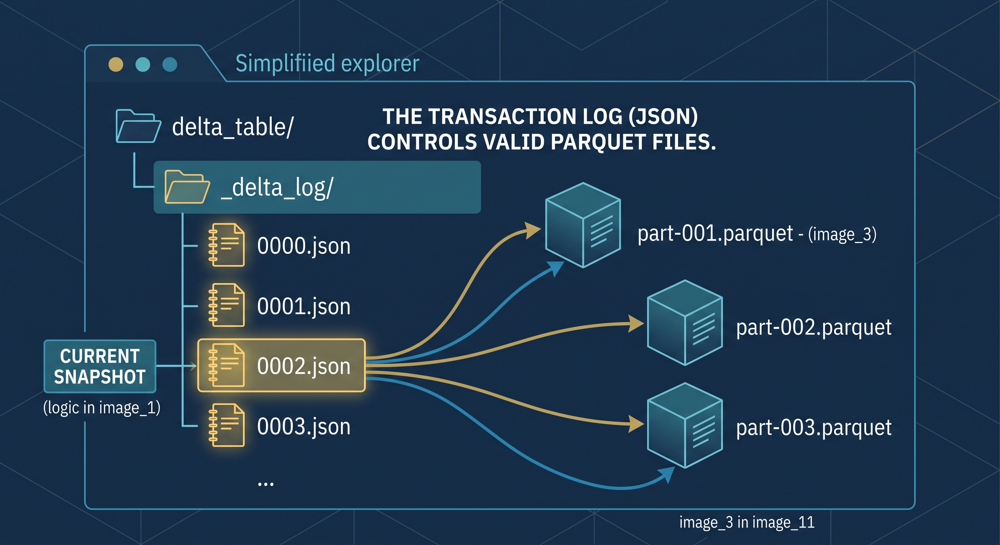
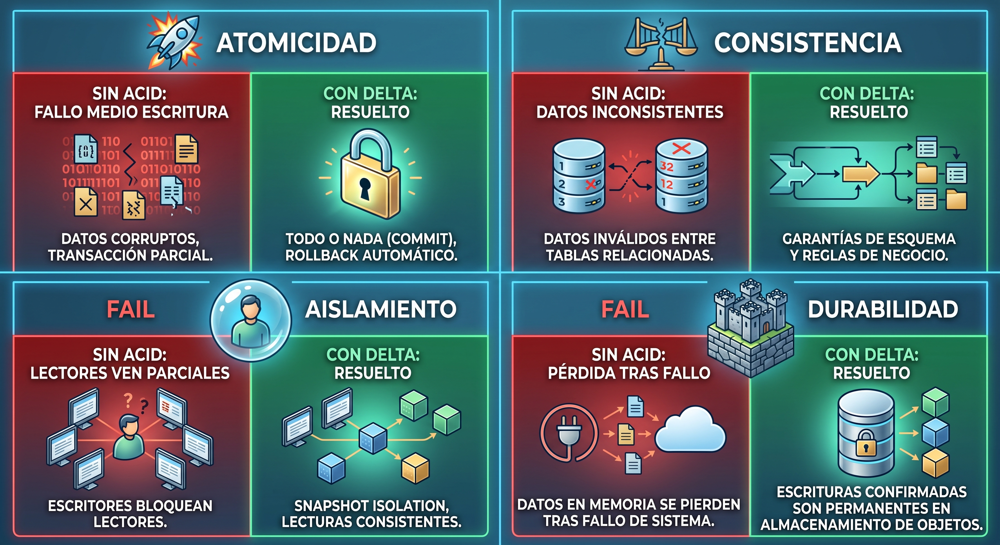
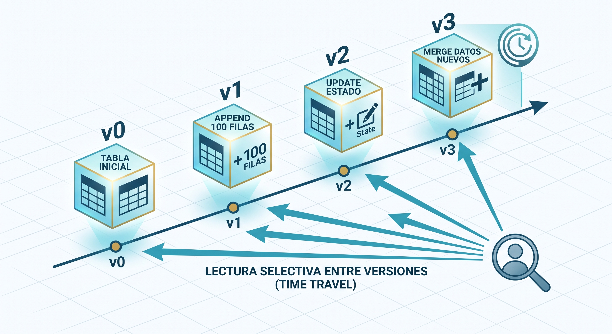
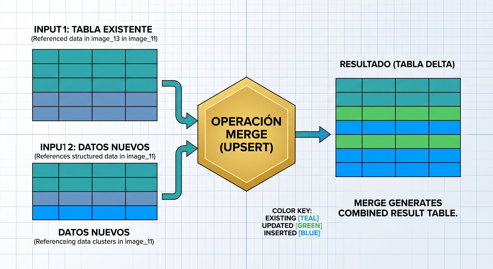

Delta Lake#
Contexto historico#
Para 2018, los Data Lakes estaban en todas partes. Millones de archivos Parquet en S3 alimentaban pipelines de ML y reportes. Pero habia un problema recurrente: los archivos Parquet no fueron disenados para modificarse.
Situacion |
Que pasa con Parquet puro |
|---|---|
Dos pipelines escriben al mismo tiempo |
Uno sobreescribe al otro. Datos perdidos |
Un pipeline falla a la mitad |
Queda la mitad de los archivos escritos. Tabla corrupta |
Necesitas actualizar 1 registro de 10 millones |
Tienes que reescribir TODO el archivo |
Cargaste datos incorrectos ayer |
No hay forma de volver atras. Hay que reprocesar todo |
Quieres saber que tenia la tabla la semana pasada |
Imposible. Solo existe la version actual |
Llega un CSV con una columna nueva |
Se escribe sin problema, pero rompe los queries existentes |
Databricks creo Delta Lake en 2019 para resolver estos problemas. Lo hizo open-source desde el inicio. La idea es simple: no cambiar el formato de los datos (siguen siendo Parquet), sino agregar un log de transacciones que controla que archivos son validos en cada momento.
Que es Delta Lake#
Delta Lake es un protocolo de almacenamiento open-source que agrega una capa de confiabilidad sobre archivos Parquet. No es un formato nuevo, no es una base de datos y no tiene un servidor. Es un directorio con archivos Parquet mas un log JSON que registra cada operacion.
Lo que agrega sobre Parquet puro:
Capacidad |
Parquet puro |
Delta Lake |
|---|---|---|
Transacciones ACID |
No |
Si — escrituras atomicas, aisladas |
Time travel |
No |
Si — leer cualquier version anterior |
Schema enforcement |
No |
Si — rechaza datos que no cumplen el esquema |
Schema evolution |
No controlada |
Controlada — agregar columnas de forma segura |
Merge / Upsert |
No — solo append o overwrite |
Si — actualizar registros individuales |
Data skipping |
Basico |
Avanzado — estadisticas min/max por archivo |
Concurrencia |
No — se corrompe |
Si — multiple escritores con control optimista |
Auditoria |
No |
Si — historial completo de operaciones |
Como funciona por dentro#
Estructura de archivos#
Una tabla Delta es un directorio con dos cosas: archivos Parquet (los datos) y un subdirectorio _delta_log/ (el cerebro).

ventas_delta/
│
├── _delta_log/ # El log de transacciones
│ ├── 00000000000000000000.json # Version 0: CREATE TABLE
│ ├── 00000000000000000001.json # Version 1: INSERT (append)
│ ├── 00000000000000000002.json # Version 2: UPDATE
│ ├── 00000000000000000003.json # Version 3: DELETE
│ └── 00000000000000000010.checkpoint.parquet # Checkpoint cada 10 versiones
│
├── part-00000-aaa.snappy.parquet # Archivo de datos (Parquet normal)
├── part-00001-bbb.snappy.parquet # Otro archivo de datos
├── part-00002-ccc.snappy.parquet # Agregado en version 1
└── part-00003-ddd.snappy.parquet # Reemplazo de version 2
El transaction log (_delta_log)#
Cada archivo JSON en _delta_log/ registra una operacion atomica. El contenido de cada archivo describe:
Campo |
Que dice |
|---|---|
add |
Que archivos Parquet se agregaron en esta operacion |
remove |
Que archivos Parquet se invalidaron (no se borran fisicamente, solo se marcan) |
metaData |
Cambios en el esquema de la tabla |
commitInfo |
Timestamp, usuario, operacion, metricas |
Ejemplo simplificado del log para version 0 (crear tabla):
{
"commitInfo": {
"timestamp": 1717200000,
"operation": "WRITE",
"operationParameters": {"mode": "overwrite"}
}
}
{
"add": {
"path": "part-00000-aaa.snappy.parquet",
"size": 45230,
"partitionValues": {},
"stats": "{\"numRecords\":3,\"minValues\":{\"ingreso\":2400},\"maxValues\":{\"ingreso\":4500}}"
}
}
Para leer la tabla, Delta lee el log desde el inicio (o desde el ultimo checkpoint) y construye la lista de archivos Parquet validos. Los archivos marcados como remove se ignoran aunque sigan fisicamente en el directorio.
Checkpoints#
Cada 10 versiones (configurable), Delta crea un checkpoint: un archivo Parquet que consolida todo el estado del log hasta ese punto. Asi no tiene que leer 1000 archivos JSON para saber el estado de la tabla — lee el ultimo checkpoint y los JSON posteriores.
Lectura sin checkpoint: leer 0.json + 1.json + 2.json + ... + 999.json
Lectura con checkpoint: leer 990.checkpoint.parquet + 991.json + ... + 999.json
Transacciones ACID en detalle#
ACID no es una caracteristica abstracta — resuelve problemas concretos que pasan en produccion:

Atomicidad — todo o nada#
Sin ACID:
Pipeline escribe archivo 1 de 3 ──► falla ──► quedan 1 de 3 archivos
La tabla tiene datos parciales. Corrupta.
Con Delta:
Pipeline escribe archivo 1 de 3 ──► falla ──► el commit no se registra en el log
La tabla sigue con los datos de la version anterior. Intacta.
Un commit en Delta solo se registra en el log cuando TODOS los archivos se escribieron exitosamente. Si algo falla a la mitad, los archivos quedan en el directorio pero no estan en el log, asi que nadie los ve.
Consistencia — las reglas se cumplen#
Sin ACID:
Se escribe un DataFrame con una columna nueva "descuento" en una tabla
que no la tiene. El archivo se crea sin error.
Los queries que no esperan esa columna fallan.
Con Delta (schema enforcement):
Se rechaza el write. Error: "columna 'descuento' no esta en el esquema"
La tabla mantiene su estructura.
Aislamiento — escrituras simultaneas no se pisan#
Sin ACID:
Pipeline A lee la tabla y empieza a escribir.
Pipeline B lee la tabla y empieza a escribir.
Pipeline A termina. Pipeline B termina.
Los archivos de A se sobreescriben con los de B. Datos de A perdidos.
Con Delta (optimistic concurrency):
Pipeline A lee version 5 y escribe → commit → version 6.
Pipeline B lee version 5 y escribe → intenta commit →
detecta que la version cambio (ahora es 6) →
reintenta sobre version 6 → commit → version 7.
Ambos writes se conservan.
Delta usa control de concurrencia optimista: asume que no hay conflictos y verifica al momento del commit. Si hay conflicto, reintenta. Esto funciona bien cuando los escritores tocan particiones distintas (lo comun). Si tocan las mismas filas, Delta detecta el conflicto y falla con un error explicito.
Durabilidad — lo escrito no se pierde#
Una vez que el commit se registra en el log, los datos son permanentes. El log vive en el mismo almacenamiento que los datos (S3, ADLS), que ya tiene durabilidad de 99.999999999% (11 nueves).
Time Travel#
Cada operacion sobre una tabla Delta crea una nueva version. Las versiones anteriores se conservan y se pueden leer en cualquier momento.

Leer una version especifica#
from deltalake import DeltaTable
# Leer la version actual
dt = DeltaTable("ventas_delta")
df_actual = dt.to_pandas()
# Leer la version 0 (el estado original de la tabla)
dt_v0 = DeltaTable("ventas_delta", version=0)
df_original = dt_v0.to_pandas()
# Leer la tabla como estaba hace 7 dias (con Spark)
# df = spark.read.format("delta") \
# .option("timestampAsOf", "2024-06-01") \
# .load("ventas_delta")
Ver el historial#
dt = DeltaTable("ventas_delta")
for entry in dt.history():
print(f"Version {entry['version']}: "
f"{entry['operation']} "
f"({entry['timestamp']})")
# Version 0: WRITE (2024-06-01 08:00:00)
# Version 1: WRITE (2024-06-02 08:00:00) ← append diario
# Version 2: MERGE (2024-06-03 10:30:00) ← correccion
# Version 3: DELETE (2024-06-03 11:00:00) ← eliminar duplicados
Casos de uso reales#
Situacion |
Como lo resuelve time travel |
|---|---|
Pipeline cargo datos incorrectos el viernes |
Leer la version del jueves y restaurarla |
Un reporte de ayer mostraba un numero diferente al de hoy |
Comparar la version de ayer con la de hoy para encontrar que cambio |
Regulacion exige saber el estado de los datos en una fecha especifica |
Leer la version de esa fecha exacta |
Se borro una particion por error |
Restaurar desde la version anterior al borrado |
Debug de un modelo de ML |
Reproducir el entrenamiento con los datos exactos que tenia cuando se entreno |
Retencion y limpieza#
Las versiones viejas ocupan espacio (los archivos Parquet invalidados siguen en disco). Para limpiarlos se usa VACUUM:
# Eliminar archivos que no pertenecen a ninguna version
# de los ultimos 7 dias (por defecto)
dt.vacuum(retention_hours=168)
# CUIDADO: despues de vacuum, ya no puedes hacer time travel
# a versiones anteriores al periodo de retencion
Schema Enforcement y Evolution#
Enforcement — rechazar lo que no cumple#
Cuando una tabla Delta tiene un esquema definido, cualquier intento de escribir datos con estructura diferente se rechaza:
# La tabla tiene: fecha (date), producto (string), ingreso (double)
# Esto FALLA:
datos_malos = pd.DataFrame({
"fecha": ["2024-07-01"],
"producto": ["dashboard"],
"ingreso": [4500],
"columna_extra": ["no deberia estar"] # No esta en el esquema
})
write_deltalake("ventas_delta", datos_malos, mode="append")
# Error: Schema mismatch - columna_extra no existe en la tabla
Esto previene el problema mas comun de los Data Lakes: que alguien agregue una columna sin avisar y rompa todos los pipelines que leen esa tabla.
Evolution — agregar columnas de forma controlada#
Cuando si necesitas agregar una columna, lo haces de forma explicita:
# Con schema_mode="merge", Delta agrega la columna nueva
# Las filas anteriores tendran NULL en esa columna
write_deltalake(
"ventas_delta",
datos_con_nueva_columna,
mode="append",
schema_mode="merge"
)
Operacion |
Que pasa |
|---|---|
Agregar columna |
Permitido con |
Eliminar columna |
Permitido con overwrite del esquema. Las filas viejas conservan el dato en versiones anteriores |
Cambiar tipo (string → int) |
Rechazado por defecto. Requiere overwrite explicito del esquema |
Renombrar columna |
Soportado con column mapping (Delta 2.0+) |
Merge / Upsert#
Una de las operaciones mas utiles: actualizar registros que ya existen e insertar los que son nuevos, en una sola operacion atomica.

El problema sin Merge#
Tabla actual:
id=1, producto=dashboard, ingreso=4500
id=2, producto=reporte, ingreso=2400
Datos nuevos (llegaron hoy):
id=2, producto=reporte, ingreso=2800 ← actualizar (cambio el ingreso)
id=3, producto=api, ingreso=3500 ← insertar (es nuevo)
Sin merge (solo append):
id=1, producto=dashboard, ingreso=4500
id=2, producto=reporte, ingreso=2400 ← duplicado!
id=2, producto=reporte, ingreso=2800 ← duplicado!
id=3, producto=api, ingreso=3500
Con merge (upsert):
id=1, producto=dashboard, ingreso=4500 ← sin cambio
id=2, producto=reporte, ingreso=2800 ← actualizado
id=3, producto=api, ingreso=3500 ← insertado
Sintaxis con PySpark#
from delta.tables import DeltaTable
delta_table = DeltaTable.forPath(spark, "ventas_delta")
delta_table.alias("actual").merge(
datos_nuevos.alias("nuevos"),
"actual.id = nuevos.id" # Condicion de match
).whenMatchedUpdateAll( # Si el id existe: actualizar
).whenNotMatchedInsertAll( # Si el id no existe: insertar
).execute()
Casos de uso para Merge#
Caso |
Como se usa |
|---|---|
SCD Tipo 1 |
Sobreescribir el valor anterior cuando cambia un atributo (ciudad del cliente) |
Deduplicacion |
Insertar solo si el registro no existe |
Datos incrementales |
Cada dia llega un archivo con datos nuevos y actualizaciones |
Correccion de datos |
Actualizar registros especificos sin reescribir toda la tabla |
Optimizacion y mantenimiento#
Data Skipping#
Delta guarda estadisticas (min, max, count, null_count) por cada columna de cada archivo Parquet. Cuando un query filtra por una columna, Delta revisa las estadisticas y salta archivos que no tienen datos relevantes.
Query: SELECT * FROM ventas WHERE fecha = '2024-06-15'
Archivo A: min(fecha)=2024-01-01, max(fecha)=2024-03-31 → SALTAR
Archivo B: min(fecha)=2024-04-01, max(fecha)=2024-06-30 → LEER
Archivo C: min(fecha)=2024-07-01, max(fecha)=2024-09-30 → SALTAR
Resultado: solo se lee 1 de 3 archivos
OPTIMIZE — compactar archivos pequenos#
Muchos appends crean muchos archivos pequenos. Eso degrada el rendimiento porque cada archivo tiene overhead de apertura. OPTIMIZE los combina:
# Con PySpark
from delta.tables import DeltaTable
dt = DeltaTable.forPath(spark, "ventas_delta")
dt.optimize().executeCompaction()
# Antes: 500 archivos de 1 MB cada uno
# Despues: 5 archivos de 100 MB cada uno
# Mismos datos, menos archivos, consultas mas rapidas
Z-ORDER — co-localizar datos relacionados#
Reorganiza los datos dentro de los archivos para que valores similares de una columna queden juntos. Mejora el data skipping:
# Optimizar para consultas que filtran por region y fecha
dt.optimize().executeZOrderBy("region", "fecha")
VACUUM — limpiar archivos viejos#
# Eliminar archivos Parquet que ya no pertenecen a ninguna
# version reciente (por defecto: ultimos 7 dias)
dt.vacuum(retention_hours=168)
Cuidado
Despues de VACUUM, no puedes hacer time travel a versiones anteriores al periodo de retencion. Los archivos Parquet de esas versiones ya no existen.
Delta Lake vs Iceberg vs Hudi#
Las tres tecnologias resuelven el mismo problema. La eleccion depende del ecosistema:
Delta Lake |
Apache Iceberg |
Apache Hudi |
|
|---|---|---|---|
Creador |
Databricks |
Netflix → Apache |
Uber → Apache |
Fortaleza |
Integracion con Spark y Databricks |
Rendimiento en tablas enormes, multi-motor |
Upserts y streaming de baja latencia |
Motor principal |
Spark |
Spark, Trino, Flink, Dremio |
Spark, Flink |
Adopcion |
La mas alta (por Databricks) |
Creciendo rapido (Snowflake, AWS) |
Nicho (streaming heavy) |
Open source |
Si (Linux Foundation desde 2023) |
Si (Apache) |
Si (Apache) |
Python nativo |
Si ( |
Parcial ( |
Limitado |
Mejor para |
Ecosistema Databricks/Spark |
Tablas muy grandes, multi-motor |
Ingesta con alta frecuencia de updates |
En la practica, la mayoria de empresas eligen Delta si usan Databricks/Spark, o Iceberg si usan AWS/Snowflake. Hudi es menos comun fuera de casos de streaming intensivo.
Desde 2023, hay esfuerzos de interoperabilidad (Delta UniForm, Iceberg REST Catalog) para que una tabla escrita en un formato se pueda leer desde otro. La tendencia es que el formato importe menos y los motores soporten todos.
Herramientas para trabajar con Delta#
Herramienta |
Lenguaje |
Necesita Spark |
Nota |
|---|---|---|---|
|
Python |
No |
Libreria nativa en Rust. Rapida, cero dependencias. Ideal para scripts y notebooks |
|
Python/Scala |
Si |
Integracion completa con Spark. MERGE, OPTIMIZE, Z-ORDER |
Databricks |
Plataforma |
Incluido |
Delta es nativo. La experiencia mas completa |
DuckDB |
SQL |
No |
Lee tablas Delta directamente con |
Polars |
Python/Rust |
No |
Soporte nativo para leer y escribir Delta |
Apache Spark |
Scala/Python |
Si |
Motor distribuido, ideal para tablas de terabytes |
Para desarrollo local (sin Spark)#
# pip install deltalake
from deltalake import DeltaTable, write_deltalake
import pandas as pd
# Crear tabla
df = pd.DataFrame({"id": [1, 2], "valor": [100, 200]})
write_deltalake("mi_tabla", df)
# Leer
dt = DeltaTable("mi_tabla")
print(dt.to_pandas())
# Append
df2 = pd.DataFrame({"id": [3], "valor": [300]})
write_deltalake("mi_tabla", df2, mode="append")
# Time travel
dt_v0 = DeltaTable("mi_tabla", version=0)
print(dt_v0.to_pandas()) # Solo las 2 filas originales
# Historial
print(dt.history())
Ventajas y desventajas#
Ventajas |
Desventajas |
|---|---|
ACID sobre archivos — sin servidor, sin licencias |
MERGE requiere Spark para tablas grandes |
Time travel para auditoria y recuperacion |
VACUUM elimina la capacidad de time travel antiguo |
Schema enforcement previene corrupcion |
Overhead del log en tablas con millones de commits |
Open source, gran comunidad |
Ecosistema fragmentado (Delta vs Iceberg vs Hudi) |
Funciona local, en la nube, en cualquier filesystem |
Requiere entender el modelo de concurrencia optimista |
Estadisticas para data skipping automatico |
OPTIMIZE y Z-ORDER requieren Spark |
Compatible con todo el ecosistema Parquet |
No reemplaza una base de datos transaccional (OLTP) |
Cuando usar Delta Lake#
Si:
Tienes un Data Lake con archivos Parquet y necesitas confiabilidad
Multiples pipelines escriben en la misma tabla
Necesitas deshacer cambios (time travel)
Los datos llegan incrementalmente y necesitas merge/upsert
Quieres control de esquema sin montar un Warehouse
Necesitas auditoria (quien cambio que, cuando)
No:
Solo un proceso lee y escribe, nunca necesitas deshacer nada (Parquet puro alcanza)
Necesitas transacciones operacionales en tiempo real (usa PostgreSQL)
El volumen es pequeno y cabe en una base de datos relacional
Solo necesitas leer datos, nunca actualizarlos (Parquet puro es mas simple)